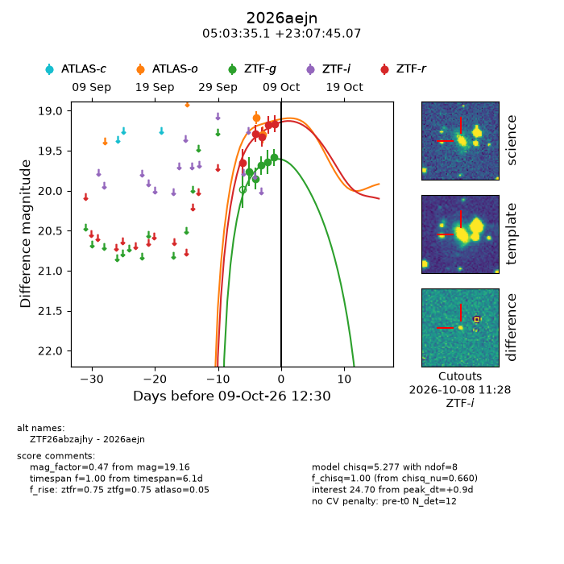
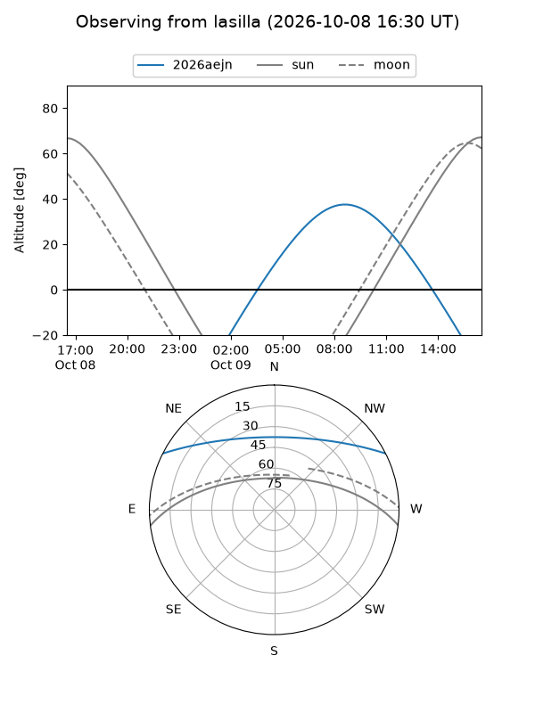
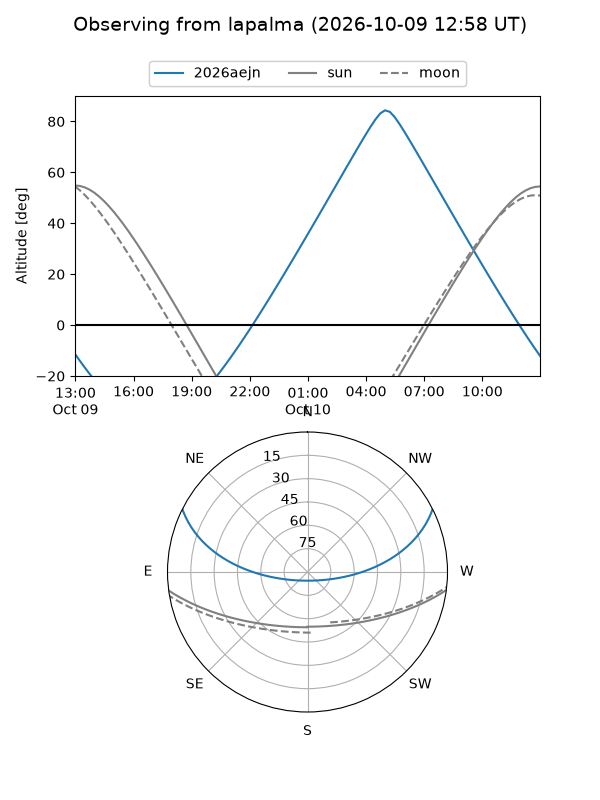
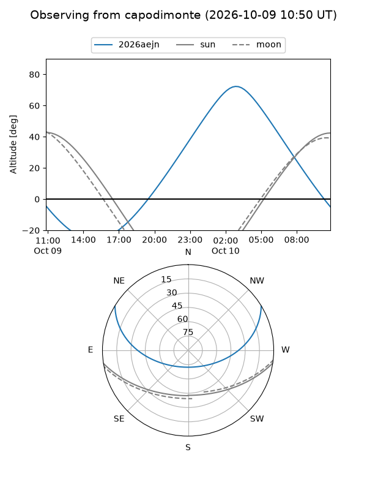
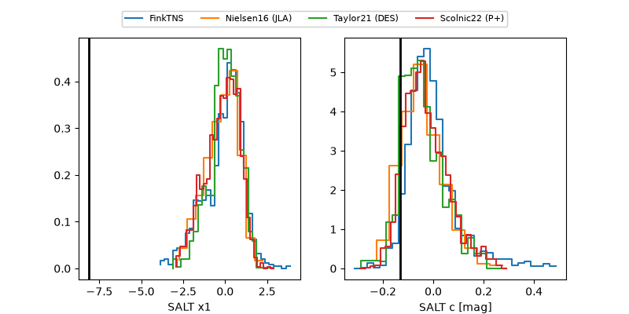

2026aejn
Target 2026aejn at 2026-10-09 12:32
Aliases and brokers:
FINK-ZTF: ztf.fink-portal.org/ZTF26abzajhy
Lasair-ZTF: lasair-ztf.lsst.ac.uk/objects/ZTF26abzajhy
ALeRCE-ZTF: alerce.online/object/ZTF26abzajhy
YSE-PZ: ziggy.ucolick.org/yse/transient_detail/2026aejn
TNS name: wis-tns.org/object/2026aejn
Direct TNS query: direct search
alt names
ZTF26abzajhy (ztf,fink_ztf)
2026aejn (tns,yse)
Coordinates:
equatorial (ra, dec) = 75.8962,+23.12919
equatorial (HMS+DMS) = 05:03:35.10,+23:07:45.07
galactic (l, b) = (179.5679,-11.06886)
Flags:
peak dt: +0.9
Photometry:
last atlaso=19.30, ztfg=19.59, ztfr=19.16
2 atlaso, 5 ztfg, 5 ztfr detections
Lightcurve

Visibility



Additional plots
